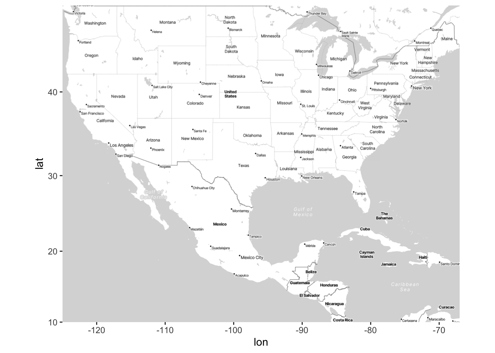
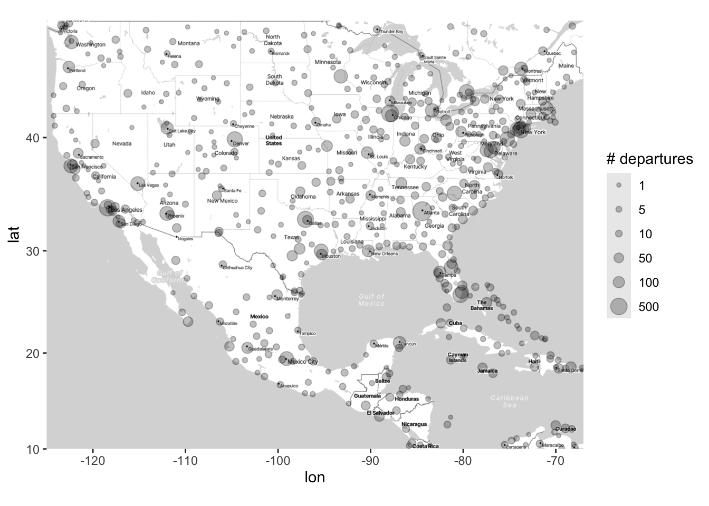

# You first need to install the ggmap R package
# install.packages("ggmap")
ggmap:register_stadiamaps("YOUR-API-KEY-HERE",
# write = TRUE saves this once
write = TRUE)Demo 12: Visualizations and inference for spatial data
Create a Stadia Maps account
Before moving on to the code below, you’ll first need to create a free Stadia Maps account in order to access the map styles to use with ggmap. You can find the directions about the process here. After you click on the “Create an Account” button, follow the steps by entering in your relevant information. Then select Mobile/Native App version to generate an API key. You’ll then find your API key in the displayed Stadia-hosted URLs, displayed at the end of the URLs after api_key=. Once you have the API key saved somewhere, after you install the ggmap package you can then run the following code to save your API key once and then never have to run this step again:
Creating Maps with ggmap
We can create maps (maps of different type such as “terrain”, “stamen_toner_lite”, etc.) with the ggmap package, as shown below. Making a basic map with ggmap follows three main steps:
Specify the coordinates of the “box” that you’ll draw your map in. This corresponds to the
left,bottom,right, andtopcoordinates. Theleftandrightcoordinates are longitude coordinates; thebottomandtopcoordinates are latitude coordinates.Put the “box” you specified into
get_stadiamap(). Also withinget_stadiamap(), specify themaptype, which determines the “terrain” that is displayed on the map, as well aszoom, which determines how much “local detail” is displayed on the map.Draw the map using
ggmap().
As an example, the following code draws a map of Pittsburgh. To do this, I first found the latitude/longitude coordinates of center of Pittsburgh. Then, I draw a “box” around Pittsburgh by adding and subtracting two latitude/longitude from the central coordinates. Finally, I used get_stadiamap() and ggmap() to plot the map.
library(tidyverse)
library(ggmap)
# step 1: draw the box
pitt <- c(left = -79.9959 - 2, bottom = 40.4406 - 2,
right = -79.9959 + 2, top = 40.4406 + 2)
# step 2: use get_stadiamap to specify maptype/zoom
map_base <- get_stadiamap(pitt, maptype = "stamen_toner_lite", zoom = 8)
# step 3: draw the map with ggmap
map_object <- ggmap(map_base, extent = "device",
ylab = "Latitude", xlab = "Longitude")
map_objectExample: Plotting Airline Flight Data across the US
Here, we’ll work with airline data from this GitHub repository. You can find out more about this dataset here.
Before we begin, note that this is just one example of how you can add interesting information to maps with ggmap. As long as you have latitude and longitude information, you should be able to add data to maps. For more interesting examples and for an in-depth description of ggmap, see the short paper by David Kahle and Hadley Wickham here. (This paper may be helpful for teams that will be working with spatial data for the group project.)
Load flight data from GitHub
Here we will use a large dataset on GitHub about airline flights across the world. After loading in the raw data, we’ll do some data manipulation to create useful variables for this dataset.
First, we’ll load a dataset on airports across the world:
# Load and format airports data
airports <- read_csv("https://raw.githubusercontent.com/jpatokal/openflights/master/data/airports.dat",
col_names = c("ID", "name", "city", "country", "IATA_FAA",
"ICAO", "lat", "lon", "altitude", "timezone", "DST"))
# Here's what the data look like:
airports# A tibble: 7,698 × 14
ID name city country IATA_FAA ICAO lat lon altitude timezone DST
<dbl> <chr> <chr> <chr> <chr> <chr> <dbl> <dbl> <dbl> <chr> <chr>
1 1 Gorok… Goro… Papua … GKA AYGA -6.08 145. 5282 10 U
2 2 Madan… Mada… Papua … MAG AYMD -5.21 146. 20 10 U
3 3 Mount… Moun… Papua … HGU AYMH -5.83 144. 5388 10 U
4 4 Nadza… Nadz… Papua … LAE AYNZ -6.57 147. 239 10 U
5 5 Port … Port… Papua … POM AYPY -9.44 147. 146 10 U
6 6 Wewak… Wewak Papua … WWK AYWK -3.58 144. 19 10 U
7 7 Narsa… Nars… Greenl… UAK BGBW 61.2 -45.4 112 -3 E
8 8 Godth… Godt… Greenl… GOH BGGH 64.2 -51.7 283 -3 E
9 9 Kange… Sond… Greenl… SFJ BGSF 67.0 -50.7 165 -3 E
10 10 Thule… Thule Greenl… THU BGTL 76.5 -68.7 251 -4 E
# ℹ 7,688 more rows
# ℹ 3 more variables: X12 <chr>, X13 <chr>, X14 <chr>Then, we’ll load a dataset on airline flight routes across the world:
# Load and format routes data
routes <- read_csv("https://raw.githubusercontent.com/jpatokal/openflights/master/data/routes.dat",
col_names = c("airline", "airlineID", "sourceAirport",
"sourceAirportID", "destinationAirport",
"destinationAirportID", "codeshare", "stops",
"equipment"))
# Here's what the data look like:
routes# A tibble: 67,663 × 9
airline airlineID sourceAirport sourceAirportID destinationAirport
<chr> <chr> <chr> <chr> <chr>
1 2B 410 AER 2965 KZN
2 2B 410 ASF 2966 KZN
3 2B 410 ASF 2966 MRV
4 2B 410 CEK 2968 KZN
5 2B 410 CEK 2968 OVB
6 2B 410 DME 4029 KZN
7 2B 410 DME 4029 NBC
8 2B 410 DME 4029 TGK
9 2B 410 DME 4029 UUA
10 2B 410 EGO 6156 KGD
# ℹ 67,653 more rows
# ℹ 4 more variables: destinationAirportID <chr>, codeshare <chr>, stops <dbl>,
# equipment <chr>Manipulating the data to get some custom tibbles
Here, we’ll do some data manipulation to obtain the number of arrivals/departures per airport.
The following code does two tasks that very commonly come up with spatial data:
Count the number of events at a particular location.
Merge two datasets by a common variable (e.g., an ID or location).
We’ve seen instances of the first task before (e.g., counting the number of subjects belonging to a certain group). We haven’t done the second task before, but it regularly comes up in spatial data: Often, you’ll find multiple datasets that contain different variables about the same spatial location, and you’ll want to merge them together. We’ll do this using the left_join() function within the dplyr package that’s in the tidyverse.
# Manipulate the routes data to create two new tibbles:
# one for arrivals, one for departures.
# Each counts the number of flights arriving/departing from each airport.
departures <- routes |>
group_by(sourceAirportID) |>
summarize(n_depart = n()) |>
# Convert the ID to integer since it's a character (need to have matching
# data types for columns you will join on)
mutate(sourceAirportID = as.integer(sourceAirportID))
arrivals <- routes |>
group_by(destinationAirportID) |>
summarize(n_arrive = n()) |>
mutate(destinationAirportID = as.integer(destinationAirportID))
# Join both of these summaries to the airports data bsed on the ID column to
# match their respective ID columns
# First join the departures:
airports <- airports |>
# We join the departures so that ID matches sourceAirportID
left_join(departures, by = c("ID" = "sourceAirportID"))
# And now join arrivals:
airports <- airports |>
# Same process - but different ID
left_join(arrivals, by = c("ID" = "destinationAirportID"))Thus, each row corresponds to a single airport with columns about the airport along with info about the number of flights (departures and arrivals).
Mapping the data we created
First, we’ll use ggmap to create a base map of the data. Although the dataset is for the whole world, we’ll focus on the US for simplicity.
# First, we'll draw a "box" around the US
# (in terms of latitude and longitude)
US <- c(left = -125, bottom = 10, right = -67, top = 49)
map <- get_stadiamap(US, zoom = 5, maptype = "stamen_toner_lite")
# Visualize the basic map
ggmap(map)
Now we’ll demonstrate how to add points to the map using geom_point(). Thus, this is equivalent to creating a scatterplot, but within the space of a map.
# Add points to the map of airports
ggmap(map) +
geom_point(data = airports, aes(x = lon, y = lat), alpha = .25)We can also add contour lines using stat_density2d(), just like we did with scatterplots. In the code below, we also use the bins argument, which we haven’t seen before in stat_density2d, but intuitively it is the same as when we used bins for histograms: More bins corresponds to more granularity in the data. I’ve found that not specifying bins can give very odd results for spatial data, so I recommend setting bins to a somewhat low value such that you can easily see high- and low-density areas on a map.
ggmap(map) +
stat_density2d(data = airports,
aes(x = lon, y = lat, fill = after_stat(level)),
alpha = 0.2, geom = "polygon", bins = 4) +
geom_point(data = airports, aes(x = lon, y = lat), alpha = .25)Now, think about what the above map is displaying. It is density of airports (which correspond to the rows of our dataset), but it is not displaying the density of flights (arrivals or departures). How can we display the density of flights on this map?
A common option is to make the size of the points proportional to a third variable (in this case departures):
# Add points to the map of airports
# Each point will be located at the lat/long of the airport
# The size of the points is proportional to the square root of the number of departures at that airport
map_point_depart <- ggmap(map) +
geom_point(data = airports,
aes(x = lon, y = lat, size = sqrt(n_depart)), alpha = .25)
# In this case, it can be helpful to create your own legend for the plot, so
# that you can set which sizes of the correspond to which values in the data:
map_point_depart <- map_point_depart +
scale_size_area(breaks = sqrt(c(1, 5, 10, 50, 100, 500)),
labels = c(1, 5, 10, 50, 100, 500),
name = "# departures")
map_point_depart
You could also change the color of the points. However, as we’ve seen previously, just setting color = variable for a continuous variable often gives unsatisfactory results (because the default colors aren’t great). This is especially true for spatial data, where there is often a wide range of responses across geography.
In what follows, I demonstrate two ways that you can manually change the colors on a map; one uses scale_color_gradient2(), and one uses scale_color_distiller. The second one is more straightforward, but the first one allows for more flexibility.
# What happens if we just set sqrt(n_depart) equal to color
ggmap(map) +
geom_point(data = airports,
aes(x = lon, y = lat, color = sqrt(n_depart)), alpha = .5)# Using scale_color_gradient2 to manually set the color scale
ggmap(map) +
geom_point(data = airports,
aes(x = lon, y = lat, color = sqrt(n_depart)), alpha = .5) +
# Note that you can also set a "mid" color, which is what the color will be
# at the midpoint (which you also set). Using limits (or breaks,
# which I don't do here) is very useful when your variable has a wide range
# and/or is very skewed (which is the case for the n_depart variable).
scale_color_gradient2(low = "blue", mid = "purple", high = "red",
midpoint = 12.5, limits = sqrt(c(1, 500)))# Using scale_color_distiller to manually set the color scale
ggmap(map) +
geom_point(data = airports,
aes(x = lon, y = lat, color = sqrt(n_depart)), alpha = .5) +
# Note that there are many different palettes - see help documentation
# for scale_color_distiller
scale_color_distiller(palette = "Spectral") We could of course map one variable to size and another to color, e.g., n_depart to size and n_arrive to color. You should NOT map one variable to both aesthetics - that is a redundant display of information.
ggmap(map) +
geom_point(data = airports,
aes(x = lon, y = lat,
size = sqrt(n_depart), color = sqrt(n_arrive)),
alpha = .5) +
scale_size_area(breaks = sqrt(c(1, 5, 10, 50, 100, 500)),
labels = c(1, 5, 10, 50, 100, 500),
name = "# departures") +
scale_color_distiller(palette = "Spectral") +
labs(color = "sqrt(# arrivals)")Finally, we can (as usual) change the shape of the points according to another variable. The following marks airports that have an altitude higher than 1500 feet (which I don’t think would normally be of scientific interest, but this nonetheless shows you how to change shape in this way):
ggmap(map) +
geom_point(data = airports,
aes(x = lon, y = lat,
size = sqrt(n_depart), color = sqrt(n_arrive),
shape = altitude > 1500),
alpha = .5) +
scale_size_area(breaks = sqrt(c(1, 5, 10, 50, 100, 500)),
labels = c(1, 5, 10, 50, 100, 500),
name = "# departures") +
scale_color_distiller(palette = "Spectral") +
labs(color = "sqrt(# arrivals)")The above plots are nice ways to show the distribution of the number of flights. However, earlier we used stat_density2d to plot the density of airports. How can we use this function to plot the density of flights?
This requires a bit of hacking. The stat_density2d will plot the density of points across rows in your dataset. Thus, if we want to look at the density of departures, we can duplicate rows that have multiple departures For example, if an airport has n_depart = 5, we can create 5 rows in a new dataset for that airport. Then, we can use stat_density_2d on this “duplicated” dataset.
# First remove the airports with missing n_depart
clean_airports <- airports |>
filter(!is.na(n_depart)) # ! is the negate operator in R, so this only keeps
# rows where n_depart is NOT missing
airports_duplicated <- clean_airports[rep(row.names(clean_airports),
clean_airports$n_depart),]
ggmap(map) + stat_density2d(data = airports_duplicated,
aes(x = lon, y = lat, fill = after_stat(level)),
alpha = 0.2, geom = "polygon")Unsurprisingly, we see there are higher concentrations of flights at major cities. Arguably, it’s much easier to deduce this from the above density plot than from the color plots. But both types of plots (density plots and color plots) serve a purpose, and preference for one or the other will depend on the application and the questions of interest.
Facetting Maps
In the above, we demonstrated how you can change the shape of points to see high- and low-altitude airports. We can also use facetting to compare high- and low-altitude airports.
Facetting with maps is exactly the same as facetting with other graphs; we just use the facet_wrap() or facet_grid() functions. There is one added bonus when facetting with graphs: In the plot below, not only do we get to compare the distribution of departure and arrivals for high- and low-altitude airports, but also we can more easily see where high- and low-altitude airports are within the US.
ggmap(map) +
geom_point(data = airports,
aes(x = lon, y = lat,
size = sqrt(n_depart), color = sqrt(n_arrive)),
alpha = .5) +
scale_size_area(breaks = sqrt(c(1, 5, 10, 50, 100, 500)),
labels = c(1, 5, 10, 50, 100, 500),
name = "# departures") +
scale_color_distiller(palette = "Spectral") +
labs(color = "sqrt(# arrivals)") +
facet_wrap(~ altitude > 1500)Statistical Analyses for Point-Reference Data
It can be helpful complement graphs like the oned above with statistical models for predicting the number of sqrt(n_depart) on top of our map. There is a huge literature on how to model spatial outcomes, and we are only going to consider two simple examples in this class that we’ve learned before: linear regression and loess.
First, we can consider running a linear regression on our data. To perform statistical analyses on the data displayed in the map, we must first “grab” the subset of the data that is being displayed in the map:
airports_subset <- airports |>
filter(lat >= 10 & lat <= 49 & lon >= -125 & lon <= -67)Then, we can run a linear regression between our outcome sqrt(n_depart) and latitude and longitude:
summary(lm(sqrt(n_depart) ~ lat + lon, data = airports_subset))
Call:
lm(formula = sqrt(n_depart) ~ lat + lon, data = airports_subset)
Residuals:
Min 1Q Median 3Q Max
-3.0399 -2.1437 -1.2636 0.3869 26.6195
Coefficients:
Estimate Std. Error t value Pr(>|t|)
(Intercept) 4.97196 1.03451 4.806 1.98e-06 ***
lat -0.01076 0.01635 -0.658 0.511
lon 0.01161 0.01072 1.083 0.279
---
Signif. codes: 0 '***' 0.001 '**' 0.01 '*' 0.05 '.' 0.1 ' ' 1
Residual standard error: 3.77 on 561 degrees of freedom
(1106 observations deleted due to missingness)
Multiple R-squared: 0.003578, Adjusted R-squared: 2.538e-05
F-statistic: 1.007 on 2 and 561 DF, p-value: 0.3659Think about why it’s unsurprising that neither of these terms are significant (but for different reasons). It’ll be helpful to refer back to the map above.
To address this, it can sometimes be helpful to run multiple models on different subsets of the data. For example, we can divide the data into the eastern and western parts of the US:
# The following code divides the data into the eastern and western
# parts of the US (I Googled "middle of united states longitude")
airports_west <- airports_subset |> filter(lon <= -98.5795)
airports_east <- airports_subset |> filter(lon > -98.5795)
# Now let's perform a linear regression:
summary(lm(sqrt(n_depart) ~ lat + lon, data = airports_west))
Call:
lm(formula = sqrt(n_depart) ~ lat + lon, data = airports_west)
Residuals:
Min 1Q Median 3Q Max
-3.3979 -1.8717 -0.8102 0.3643 17.9495
Coefficients:
Estimate Std. Error t value Pr(>|t|)
(Intercept) -3.93970 3.78550 -1.041 0.29947
lat -0.11022 0.03430 -3.214 0.00157 **
lon -0.10060 0.03765 -2.672 0.00827 **
---
Signif. codes: 0 '***' 0.001 '**' 0.01 '*' 0.05 '.' 0.1 ' ' 1
Residual standard error: 3.408 on 171 degrees of freedom
(314 observations deleted due to missingness)
Multiple R-squared: 0.0666, Adjusted R-squared: 0.05568
F-statistic: 6.101 on 2 and 171 DF, p-value: 0.002759summary(lm(sqrt(n_depart) ~ lat + lon, data = airports_east))
Call:
lm(formula = sqrt(n_depart) ~ lat + lon, data = airports_east)
Residuals:
Min 1Q Median 3Q Max
-2.9834 -2.2450 -1.4504 0.5261 26.5616
Coefficients:
Estimate Std. Error t value Pr(>|t|)
(Intercept) 4.62321 2.00581 2.305 0.0217 *
lat 0.00685 0.01896 0.361 0.7182
lon 0.01381 0.02330 0.593 0.5537
---
Signif. codes: 0 '***' 0.001 '**' 0.01 '*' 0.05 '.' 0.1 ' ' 1
Residual standard error: 3.882 on 387 degrees of freedom
(792 observations deleted due to missingness)
Multiple R-squared: 0.001166, Adjusted R-squared: -0.003996
F-statistic: 0.2259 on 2 and 387 DF, p-value: 0.7979Compare and contrast these regressions with each other as well as with the “overall” regression we did earlier.
Now let’s consider using loess. As a reminder, we learned how to plot loess curves when we have one quantitative covariate and one quantitative outcome. For example, the below plot makes a scatterplot of longitude and sqrt(n_depart) with a loess curve on top.
airports_subset |>
ggplot(aes(x = lon, y = sqrt(n_depart))) +
geom_point(alpha = 0.5) +
geom_smooth(method = "loess")You can interpret the above plot as what we would estimate sqrt(n_depart) to be when we move from west to east (left to right), averaged across all latitude values. What’s nice about loess is that it’s a very easy way to fit a flexible regression line. How can we make something similar to the above, but accounting for longitude and latitude in our loess curve? It takes more work than just one line of code to answer this question, but the pay-off is usually worth it (i.e., you’ll get a cool/informative graph).
Let’s consider a loess model that includes latitude and longitude. The following model includes the main effects for latitude and longitude as well as their interaction, making for a (relatively) flexible model:
loess_model <- loess(sqrt(n_depart) ~ lon * lat, data = airports_subset,
control = loess.control(surface = "direct"))The line control = loess.control(surface = "direct") (which we have not seen before) basically says, “loess, please extrapolate when making predictions from this model.” Usually it’s not a good idea to extrapolate, but also with map data it’s usually clear where extrapolations occur, as we will see shortly.
Now we have built a “flexible” model for the outcome using loess. A natural question to ask is: Based on the data, what does loess estimate the number of flights is across different areas of the country? To answer this question, we will follow this workflow:
Make a point-referenced map of the outcome variable (as we have done above).
In code (not visually), make a grid of latitude and longitude points on your map.
Using your
loessmodel, predict what the outcome variable is at each point on the grid.Add the predictions in the third bulletpoint to the point-referenced map in the first bulletpoint using contour lines.
Below is the code to implement this workflow for the airline example. We already completed the first bulletpoint, so now we just need to do the last three bulletpoints (below).
# Now we'll predict what the sqrt(n_depart) is for a grid of lat/long points.
# This code creates a sequence of latitude and longitude points where
# we want to predict/estimate what sqrt(n_depart) is:
lat_grid <- seq(10, 49, by = 1)
lon_grid <- seq(-125, -67, by = 2)
# the following line creates a grid of the lat and long coordinates
# (To better understand what this line is doing, it'd be helpful to
# look at the help documentation for expand.grid, which is often used
# in computational statistics. Note we named the columns to match the
# ones used for the model.)
lonlat_grid <- expand.grid("lon" = lon_grid,
"lat" = lat_grid,
# NOTE: We use the following input when using a
# grid input for the loess model - this ensures
# that the predictions we get will be returned in
# a long column versus a grid (see what happens when
# you comment out the following line for yourself)
KEEP.OUT.ATTRS = FALSE)
# predicted values of sqrt(n_depart) along the grid
loess_pred <- predict(loess_model, lonlat_grid)
# Now we need to attach these predicted values to the grid of points that we created earlier:
loess_pred_tbl <- lonlat_grid |>
# Convert to tibble:
as_tibble() |>
# Add this column:
mutate(pred_n_depart = loess_pred)
# Now we'll make the scatterplot map again, but with contours for what loess predicts on top:
ggmap(map) +
geom_point(data = airports,
aes(x = lon, y = lat, size = sqrt(n_depart)),
alpha = .5) +
geom_contour_filled(data = loess_pred_tbl, binwidth = 1,
aes(x = lon, y = lat, z = loess_pred,
color = after_stat(level)),
alpha = 0.2) +
scale_size_area(breaks = sqrt(c(1, 5, 10, 50, 100, 500)),
labels = c(expression(sqrt(1)), expression(sqrt(5)),
expression(sqrt(10)), expression(sqrt(50)),
expression(sqrt(100)), expression(sqrt(500)))) +
labs(size = "sqrt(# departures)",
color = "level", fill = "level")Warning: Removed 7134 rows containing missing values or values outside the scale range
(`geom_point()`).There are several takeaways from this plot. First, we can see that - unsurprisingly - loess is detecting that higher numbers of flights are occurring in the eastern and western parts of the US. Sure, we already knew this from the previous plot, but now we have a statistical model that verifies that finding. Furthermore, we can see the estimated number of flights is only low for the very northern part of the US and South America, which probably also aligns with your intuition. Finally, the model is suggesting something that definitely should not align with your intuition: It is estimating that there is a high number of flights in the middle of the Pacific Ocean!! However, there is no data out in the Pacific Ocean, so we know that the model is extrapolating outside the range of our data and that we should take these results with a very large grain of salt (i.e., probably not trust it). In this example, loess is probably making the following logic: “Let’s say I start in Nevada and go a little bit west - the number of flights goes up a lot! So, if I keep going west, the number of flights will probably keep going up?” That logic ends up being incorrect, and thus results in untrustworthy/unintuitive extrapolations.